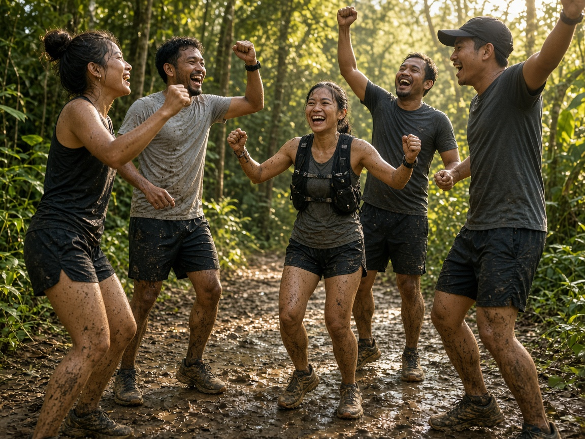

Guest → Member funnel
Why: Gen Z mau coba dulu sebelum commit. Tiga langkah jelas di halaman mengurangi friksi “harus daftar baru boleh datang”.
↑ Member baru · ↑ run attendance
Samarinda Hash House Harriers · Brand Guideline v1.0
01 · Isi
02 · Strategy
Tujuan utama: menarik Gen Z (dan hasher muda) tanpa menghilangkan jiwa hash yang sudah ada sejak akhir 80-an.
03 · Sonic / verbal mark
Supaya orang dengar “On On” langsung ingat SH3. Bukan cuma sapaan hash global. Kita pakai sebagai slogan merek lokal.
Dengar “On On” → ingat SH3.
04 · Essence
SH3 = chapter Hash House Harriers di Samarinda: trail Minggu, tepung, circle Down-Down, guest welcome.
Kontras tinggi. Judul besar. Tidak malu kuning. Why: beda dari website olahraga generik.
Samarinda, Mahakam, Kaltim. Why: pride tempat = alasan orang betah & share.
Guest boleh. Pack jaga. Why: turunkan takut “klub eksklusif”.
CTA jelas. Why: traffic tanpa convert = rugi redesign.
05 · Product → revenue
Fitur di landing bukan dekorasi. Masing-masing mendorong akuisisi, retensi, atau pemasukan (donasi / sponsor / member aktif).
Why: Gen Z mau coba dulu sebelum commit. Tiga langkah jelas di halaman mengurangi friksi “harus daftar baru boleh datang”.
↑ Member baru · ↑ run attendance
Why: poin, tier Bronze→Platinum, dan ajak teman kasih alasan balik tiap Minggu. Leaderboard / Wall of Fame = status sosial yang Gen Z suka share.
↑ Repeat runs · ↑ guest bawa teman · biaya akuisisi turun
Why: orang lebih rela donasi kalau tahu untuk lari mana, progress berapa, dan siapa paling besar (social proof). Sort Terbesar/Terbaru mirip platform crowdfunding yang sudah familiar.
↑ Donasi event · ↑ transparansi · ↑ repeat donor
Why: brand lokal butuh paket jelas (Platinum→Media Partner) terpisah dari rewards member. Deck di website mempercepat closing tanpa PDF bolak-balik.
↑ Sponsor cash / in-kind · ↑ nilai event
Why: landing menjual; portal lama tetap otak akun. Event list + Daftar + WA mengurangi “kapan lari / di mana” yang sering bikin orang batal datang.
↑ Show-up rate · ↓ churn karena bingung jadwal
06 · Logo
Logo resmi circular: Indonesia banner, Hash House Harriers · Samarinda, siluet hasher di peta Kalimantan (emas & merah).
On ink
On paper
On acid
Jaga ruang kosong minimal setinggi huruf “S” di “SAMARINDA”. Di header web, logo 44–56px + nama chapter.
Wordmark: SAMARINDA HASH / HOUSE HARRIERS. Slogan “On On” melengkapi, tidak mengganti nama di posisi brand.
07 · Warna
Dari CSS tokens website. Acid + Ink pasangan utama. Paper body. Sky section gelap.
Core (digital)
Support
Aturan: teks di atas Acid = Ink. Di atas Ink/Sky = Acid atau Paper. Jangan aksen ungu/neon lain: itu mengaburkan “ini SH3”.
08 · Tipografi
Display · Hubot Sans Black / 75% stretch
Hash House Harriers
Body · TikTok Sans
Tiap Minggu kita lari trail di Samarinda dan alam Kaltim, terus lanjut circle Down-Down. Guest welcome. Tidak ada jam finish. Ikuti tepung saja.
Fallback
Display: Arial Narrow · Body: system-ui · Jangan Inter/Roboto sebagai display (terlalu “AI default”).
09 · Fotografi
Hutan, lumpur, pack, jembatan, sungai, circle. Cahaya natural.



Full-bleed trail + type Acid. Diamond motion sebagai ciri, jangan nutup kata penting. Why: satu viewport = satu cerita brand.
Object-position ~38% untuk wajah/pack. Why: fokus manusia di pack, bukan cuma scenery kosong.
10 · Suara
“Mud, mates & Mahakam air · Down-Down · Ayo join circle · Guests welcome · On On!”
11 · UI
Primary = Ink + Acid text. Secondary outline. Donasi Acid fill saat butuh highlight revenue.
12 · Do & don’t